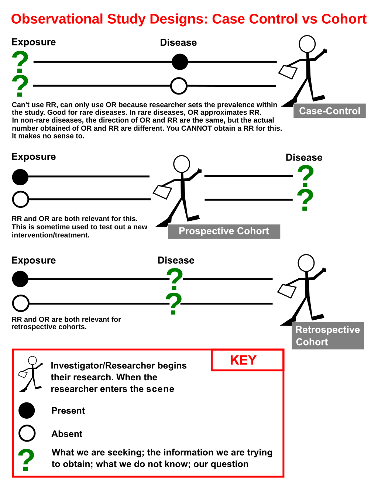

Instructions
To participate in this activity you will need have to two windows readily available to you:
- Your Zoom window
- The Team Up! activity linked from Quercus in a browser window for voting.
I would recommend that one member of the team shares their screen with the rest of the team and shows this activity where you can see the question and options.
Note 1: In the Team Up! activity you will just see the letters for the questions, not the options themselves.
Note 2: There are hints for some questions, but if you get really stuck, please use the ‘Ask for Help’ option in Zoom.
Data

You have also have some data about strawberry yields (in kgs) across 18 different strawberry patches on your farm. There had been a problem with birds eating more than their fair share of your grandmother’s strawberries (there wouldn’t be enough for her famous jam!) so she had tried out three ‘treatment’ types: a scarecrow, covering the strawberries with netting and doing nothing (as a control).
Each patch was harvested 6 times, twice under each treatment. Your grandmother says weather and soil conditions were remarkably consistent across the entire time.
The chunk below sets up the data (I am hoping this will help with the issues some have had with the interactive). Make sure you run it and take a look at the data.
library(tidyverse)
strawberry <- tibble(patch = rep(LETTERS[1:18], each = 6),
treatment = rep(rep(c("Scarecrow", "Netting", "No netting"), each = 2), times=18),
yield = c(837.4, 840.77, 853.29, 836.56, 611.72, 519.19, 888.89, 953.07, 947.76, 957.13, 627.6, 505.81, 659.95, 692.02, 589.16, 658.43, 523.59, 401.15, 445.43, 535.07, 902.05, 903.2, 892.48, 896.87, 927.16, 961.84, 992.97, 885.17, 498.57, 443.55, 524.05, 563, 434.05, 337.48, 631.33, 641.19, 804.36, 867.16, 828.58, 864.59, 591.92, 522.06, 709.58, 901.48, 928.56, 908.38, 739.81, 534.37, 699.31, 752.1, 712.14, 662.61, 575.66, 475.59, 903.78, 907.68, 926.77, 913.07, 624.31, 542.83, 711.95, 986.7, 843.28, 680.08, 640.26, 326.88, 626.73, 574.56, 429.59, 394.77, 464.36, 626.33, 891.77, 875.99, 873.64, 834.44, 599.71, 528.52, 894.39, 839, 887.76, 984.05, 530.42, 530.61, 752.49, 689.06, 729.33, 690.72, 596.13, 438.45, 899.69, 917.25, 889.67, 904.06, 628.39, 537.69, 1227.03, 987.17, 801.67, 600.89, 462.74, 510.97, 581.79, 672.63, 453.58, 256.99, 727.98, 566.31))
glimpse(strawberry)Question 1
To answer the following question, wrangle and plot the strawberry data as follows:
- Change the order of the levels of the treatment factor so that instead of being alphabetical, they go: “No netting”, “Netting”, “Scarecrow”. (I.e. the legend should be in that order, with “No netting” at the top.)
- Pipe this changed strawberry data directly into a ggplot.
- Put
patchon your x-axis,yieldon your y, and colour bytreatment. - Use points as your geometry. (There is probably a bit of overprinting, but we won’t owrry about that here.)
- You can add
theme_minimal()if you like, but use the default colour palette.
### add this to your code if the data isn't loading for you or it says it doesn't know what %>% is
library(tidyverse)
strawberry <- tibble(patch = rep(LETTERS[1:18], each = 6),
treatment = rep(rep(c("Scarecrow", "Netting", "No netting"), each = 2), times=18),
yield = c(837.4, 840.77, 853.29, 836.56, 611.72, 519.19, 888.89, 953.07, 947.76, 957.13, 627.6, 505.81, 659.95, 692.02, 589.16, 658.43, 523.59, 401.15, 445.43, 535.07, 902.05, 903.2, 892.48, 896.87, 927.16, 961.84, 992.97, 885.17, 498.57, 443.55, 524.05, 563, 434.05, 337.48, 631.33, 641.19, 804.36, 867.16, 828.58, 864.59, 591.92, 522.06, 709.58, 901.48, 928.56, 908.38, 739.81, 534.37, 699.31, 752.1, 712.14, 662.61, 575.66, 475.59, 903.78, 907.68, 926.77, 913.07, 624.31, 542.83, 711.95, 986.7, 843.28, 680.08, 640.26, 326.88, 626.73, 574.56, 429.59, 394.77, 464.36, 626.33, 891.77, 875.99, 873.64, 834.44, 599.71, 528.52, 894.39, 839, 887.76, 984.05, 530.42, 530.61, 752.49, 689.06, 729.33, 690.72, 596.13, 438.45, 899.69, 917.25, 889.67, 904.06, 628.39, 537.69, 1227.03, 987.17, 801.67, 600.89, 462.74, 510.97, 581.79, 672.63, 453.58, 256.99, 727.98, 566.31))# fct_relevel() can help you change the order of the levels of a factor. There is an example for the honey data in the main Statdew valley interactive.# Inside your ggplot() command, your aesthetic should look like this: aes(x = patch, y = yield, colour = treatment)Which patch and treatment combo had the lowest yield green dot on your graph?
A. Patch F, no netting.
B. Patch D, scarecrow.
C. Patch K, no netting.
D. Patch R, netting.
Question 2
Considering the strawberry data described in the Data section and the plot you made, which ONE of the following statements best describes an appropriate analysis for this data?
A. We can approach this analysis with linear regression (all fixed effects) as all our assumptions appear to be valid.
B. We should make patch a fixed effect and treatment a random effect.
C. We should make patch a random effect and treatment a fixed effect and include a patch-treatment interaction (also a random effect).
D. We should make everything a random effect.
Question 3
The below code aggreagtes the data to get the average yield by treatment and patch.
strawberry_agg <- strawberry %>%
group_by(patch, treatment) %>%
summarize(yield_avg = mean(yield), .groups = "drop")
strawberry_aggHow many values are averaged to get each observation of yield_avg in strawberry_agg?
A. 2
B. 3
C. 6
D. 18
Question 4
Suppose an appropriate model for this data is: \[y_{ijk} = \mu + \alpha_i + b_j + (\alpha b)_{ij} + \epsilon_{ijk}\]
where:
- \(\mu\) is the grand mean yield of strawberries, in kgs, across all the data.
- \(\alpha_i\) is the fixed effect of treatment.
- \(b_j\) is the random effect of patch.
- \(\epsilon_{ijk}\) is the error term.
Which ONE of the following statements is FALSE?
A. \(\alpha_i\) and \((\alpha b)_{ij}\) are the only fixed effects in this model.
B. \(\mu\) is the same for all values of i, j and k.
C. There are three random quantities being estimated.
D. \(b_j \sim N(0, \sigma_b^2)\) in this model.
Question 5
# Fit a model with yield as the response and the main effects
# and interaction of treatment and patch as the explanatory variables
strawberry_int <- lm(__________, data = strawberry)
# This is the code from the previous questions that aggreagtes
# the data to get the average yield by treatment and patch.
strawberry_agg <- strawberry %>%
group_by(patch, treatment) %>%
summarize(yield_avg = mean(yield), .groups = "drop")
strawberry_agg
# Fit a linear model model using the strawberry_agg data that has
# yield_avg as the response and treatment and patch as main effects.
# No interaction.
strawberry_agg_mod <- lm(__________, data = strawberry)
# This code aggreagtes the data to find the average yield for each patch
strawberry_agg2 <- strawberry %>%
group_by(patch) %>%
summarize(yield_avg = mean(yield), .groups = "drop")
# Fit a INTERCEPT ONLY linear model using the strawberry_agg2 data
# that has yield_avg as the reponse.
strawberry_patch_mod <- lm(__________, data = strawberry)
# One you have added the models above, you will need to figure out
# what each of these terms are.
# A
summary(strawberry_agg_mod)$sigma^2 - (summary(strawberry_int)$sigma^2)/2
# B
summary(strawberry_patch_mod)$sigma^2 - (summary(strawberry_agg_mod)$sigma^2)/3
# C
summary(strawberry_int)$sigma^2
# We will continue to dicuss fixed and random effects and linear models next week.
# Here is a sneak peek of the way we would fit this kind of model porfessionally.
# It may or may not give you some hints for this question if you can
# figure out the output and match it with the above.
mod <- lme4::lmer(yield ~ treatment + (1|patch) + (1|patch:treatment), data = strawberry)
summary(mod)## add the data to the top of your code if it isn't loading
strawberry <- tibble(patch = rep(LETTERS[1:18], each = 6),
treatment = rep(rep(c("Scarecrow", "Netting", "No netting"), each = 2), times=18),
yield = c(837.4, 840.77, 853.29, 836.56, 611.72, 519.19, 888.89, 953.07, 947.76, 957.13, 627.6, 505.81, 659.95, 692.02, 589.16, 658.43, 523.59, 401.15, 445.43, 535.07, 902.05, 903.2, 892.48, 896.87, 927.16, 961.84, 992.97, 885.17, 498.57, 443.55, 524.05, 563, 434.05, 337.48, 631.33, 641.19, 804.36, 867.16, 828.58, 864.59, 591.92, 522.06, 709.58, 901.48, 928.56, 908.38, 739.81, 534.37, 699.31, 752.1, 712.14, 662.61, 575.66, 475.59, 903.78, 907.68, 926.77, 913.07, 624.31, 542.83, 711.95, 986.7, 843.28, 680.08, 640.26, 326.88, 626.73, 574.56, 429.59, 394.77, 464.36, 626.33, 891.77, 875.99, 873.64, 834.44, 599.71, 528.52, 894.39, 839, 887.76, 984.05, 530.42, 530.61, 752.49, 689.06, 729.33, 690.72, 596.13, 438.45, 899.69, 917.25, 889.67, 904.06, 628.39, 537.69, 1227.03, 987.17, 801.67, 600.89, 462.74, 510.97, 581.79, 672.63, 453.58, 256.99, 727.98, 566.31))
strawberry_int <- lm(yield ~ treatment*patch, data = strawberry)
summary(strawberry_int)
strawberry_agg_mod <- lm(yield_avg ~ treatment + patch, data = strawberry_agg)
summary(strawberry_agg_mod)
strawberry_patch_mod <- lm(yield_avg ~ 1, data = strawberry_agg2)
summary(strawberry_patch_mod)
# A
summary(strawberry_agg_mod)$sigma^2 - (summary(strawberry_int)$sigma^2)/2
# B
summary(strawberry_patch_mod)$sigma^2 - (summary(strawberry_agg_mod)$sigma^2)/3
# C
summary(strawberry_int)$sigma^2# I = 3 (treatments)
# J = 18 (patches)
# K = 2 (obs in each level of treatment/patch)# sigma^2 is the variance of our error term. In this balanced design you can get it by squaring the residual standard error from the interaction (and main effects) model.# The variability explained by the interaction term is equal to the variance of the main effects model on the aggreagted data (one average observation per treatment and patch) minus [the variance of the interaction (and main effects model) model divided by the number of observations per patch/treatment combo].
# The variability explained by patch to patch differences (separate to the interaction effect) is the patch-to-patch variability (intercept only model on the aggregated data by patch) minus [the variance of the main effects model on the aggreagted data (one average observation per treatment and patch) divided by the number of treatments] A. A is \(\hat{\sigma}^2\), B is \(\hat{\sigma}_b^2\), C is \(\hat{\sigma}_{\alpha b}^2\).
B. A is \(\hat{\sigma}_b^2\), B is \(\hat{\sigma}^2\), C is \(\hat{\sigma}_{\alpha b}^2\).
C. A is \(\hat{\sigma}_{\alpha b}^2\), B is \(\hat{\sigma}_b^2\), C is \(\hat{\sigma}^2\).
D. A is \(\hat{\sigma}_{\alpha b}^2\), B is not actually one of the variances for our random effects, C is \(\hat{\sigma}^2\).
Question 6
Suppose our data was presented as follows. We are still interested in making the same plot and doing the same models as before.
| patch | No netting, harvest 1 | No netting, harvest 2 | Netting, harvest 3 | Netting, harvest 4 | Scarecrow, harvest 5 | Scarecrow, harvest 6 |
|---|---|---|---|---|---|---|
| A | 837.40 | 840.77 | 853.29 | 836.56 | 611.72 | 519.19 |
| B | 888.89 | 953.07 | 947.76 | 957.13 | 627.60 | 505.81 |
| C | 659.95 | 692.02 | 589.16 | 658.43 | 523.59 | 401.15 |
| D | 445.43 | 535.07 | 902.05 | 903.20 | 892.48 | 896.87 |
| E | 927.16 | 961.84 | 992.97 | 885.17 | 498.57 | 443.55 |
| F | 524.05 | 563.00 | 434.05 | 337.48 | 631.33 | 641.19 |
| G | 804.36 | 867.16 | 828.58 | 864.59 | 591.92 | 522.06 |
| H | 709.58 | 901.48 | 928.56 | 908.38 | 739.81 | 534.37 |
| I | 699.31 | 752.10 | 712.14 | 662.61 | 575.66 | 475.59 |
| J | 903.78 | 907.68 | 926.77 | 913.07 | 624.31 | 542.83 |
| K | 711.95 | 986.70 | 843.28 | 680.08 | 640.26 | 326.88 |
| L | 626.73 | 574.56 | 429.59 | 394.77 | 464.36 | 626.33 |
| M | 891.77 | 875.99 | 873.64 | 834.44 | 599.71 | 528.52 |
| N | 894.39 | 839.00 | 887.76 | 984.05 | 530.42 | 530.61 |
| O | 752.49 | 689.06 | 729.33 | 690.72 | 596.13 | 438.45 |
| P | 899.69 | 917.25 | 889.67 | 904.06 | 628.39 | 537.69 |
| Q | 1227.03 | 987.17 | 801.67 | 600.89 | 462.74 | 510.97 |
| R | 581.79 | 672.63 | 453.58 | 256.99 | 727.98 | 566.31 |
Which ONE of the following statements best describes our situation with this new version of the dataset?
A. This dataset is also tidy for our purposes.
B. This dataset is NOT tidy for our purposes because each observational unit has too many observations.
C. This dataset is NOT tidy for our purposes because it is not the case that each value is in one any only one cell.
D. This dataset is NOT tidy for our purposes because it is not the case that each variable is in one any only one column.
Question 7
Recall the flow chart from Week 3.

The difference between the types of cohort studies listed here is the timing of when the researcher gets involved. The difference between case control studies and cohort studies is which information participants are recruited on, that is what why know at the beginning vs what we find out. For cohort studies, we recruit on exposure. For case-control studies, we recruit on outcome status (shown as disease in the image below, but canbe more broad).
I like the visual below for explaining this also. (Don’t worry about odds ratios (OR) and risk ratios (RR) until we cover logistic regression.)
Question marks identify what is not known when recruitng participants. Circles (filled or not) represent what was known when recruiting participants.

Image source: Jmarchn - File:ExplainingCaseControlSJW.jpg from Kelidimari, CC BY-SA 3.0, https://commons.wikimedia.org/w/index.php?curid=75663040
{kind=link}
Suppose a study is being conducted in a small city about 45 minutes drive from your Statdew Valley farm. You read about it in the Statdew Valley Gazette.
…As locals will remember, a somewhat suspiciously glowing cloud (dubbed the ‘Glow Cloud’ by then 4-year-old Susie Carlos) appeared over the West side of town 20 years ago for a period of 6 months. Local legend has emerged that children living in the area covered by the Glow Cloud became much better at doing their multiplication tables. Now a study is exploring this claim. 30 local children who were aged 5 to 7 and lived under the Glow Cloud and 30 local children, of the same age range, who didn’t have been recruited for the study. Their scores on an end of year multiplcation facts test conducted by all local schools in Grade 7 will be accessed to investigate this firther…
What kind of study is this?
A) Randomised control trial.
B) Prospective cohort.
C) Retrospective cohort.
D) Case-control.